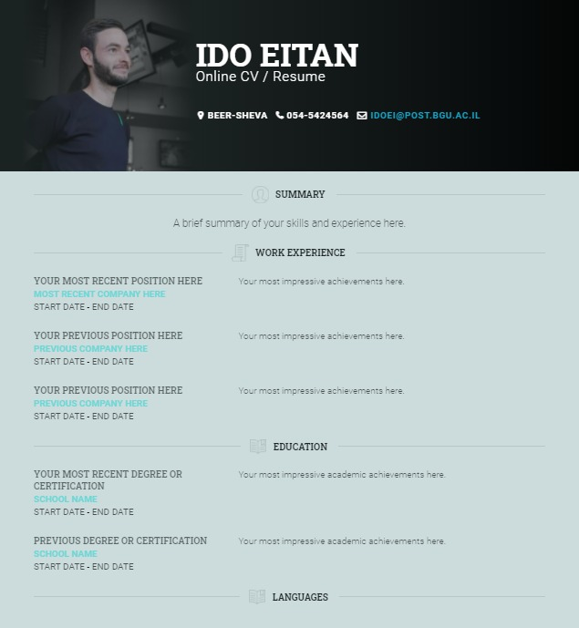

UX:
א. מה קהל היעד של האתר?
מעסיקים אפשריים
ב. מה המטרה הראשית של האתר?
התנסות בבניית אתר קו"ח אישי בhtml
ג. מה המטרות המשניות?
יאפשר הפצה של קורות החיים שלי למעסיקים עתידיים
ד. מה הפעולות שאתם רוצים שהמשתמש יבצע באתר?
שמעסיקים אפשריים יוכלו לפנות אליי דרך המייל או להשאיר הודעה באתר
ה. מה מדדי ההצלחה?
שאחוז יוצרי הקשר איתי מתוך כלל הכניסות לאתר יהיה כמה שיותר גבוה
ו. לאיזה עולם תוכן האתר מתייחס?
קריירה ועסקים
UI:
א. מה מבנה האתר?
ב. איך יראה ה-layout של העמוד/עמודים. ציירו סקיצה של grid לעמודים.
ג. מה יהיה בכל חלק של ה-grid.
ד. מה המידע / פונקציונאליות של כל חלק.
ה. מה סכמת הצבעים של האתר.
ו. מה הפונטים של האתר.
ז. איזה images יהיו באתר.

הצבעים :
#1B2222 , #3AD3D3 , #14A3C5 , #CCDCDC
הפונטים :
roboto, roboto slab
התמונות :